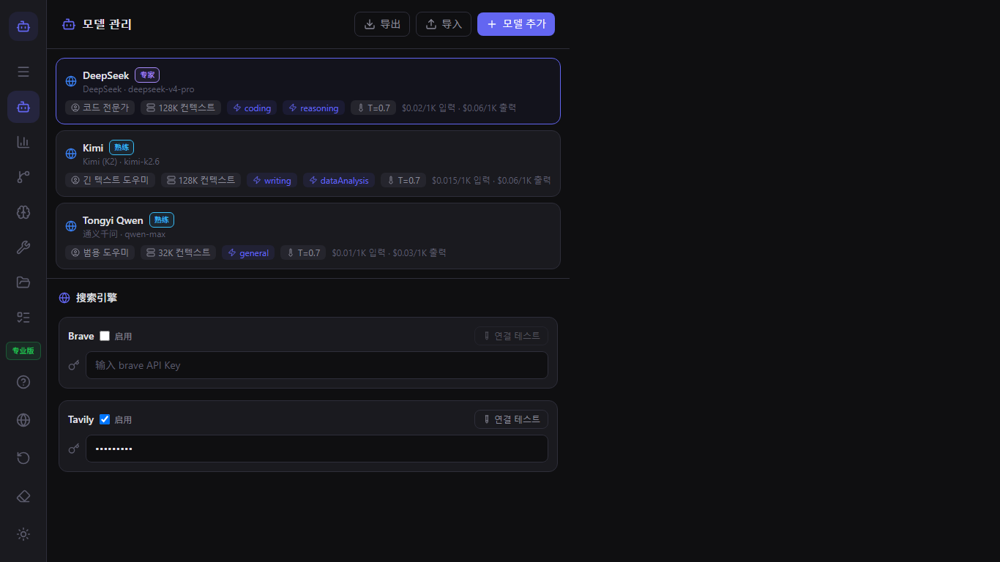
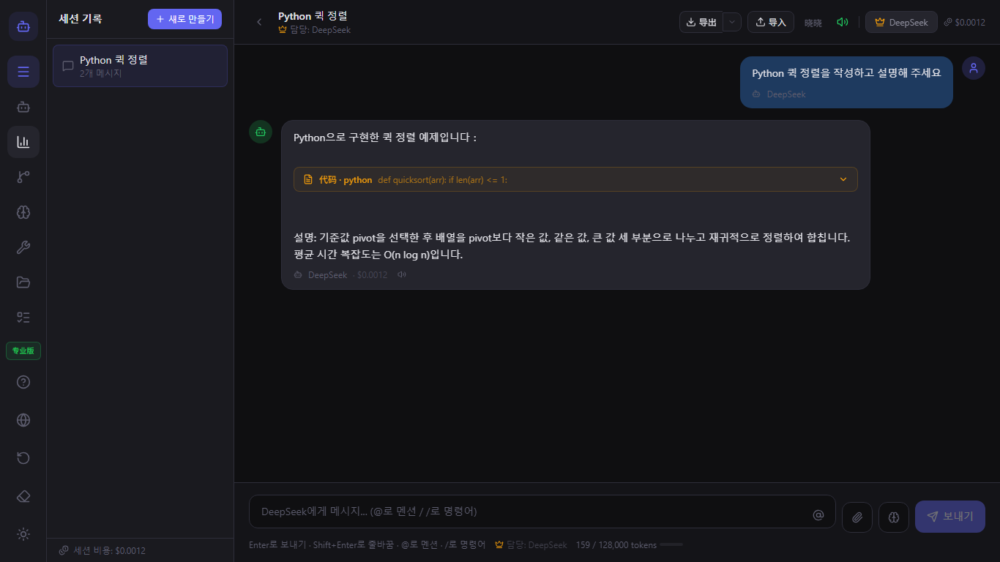
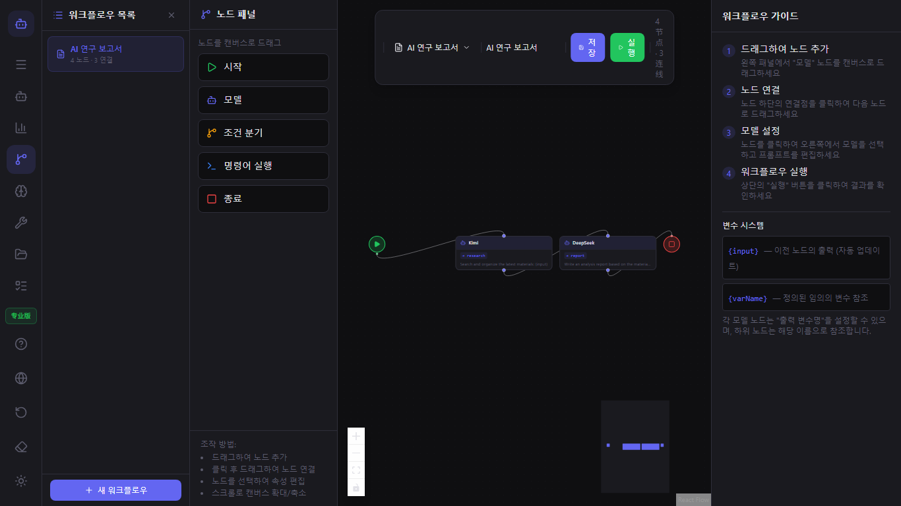
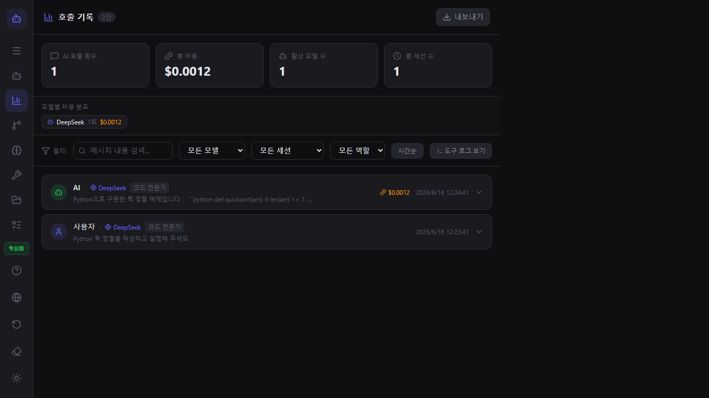

ModelFlow 사용자 가이드
ModelFlow에 오신 것을 환영합니다. 이 가이드는 첫 실행부터 고급 다중 모델 워크플로까지 모든 것을 다룹니다.
빠른 시작
- Microsoft Store에서 ModelFlow를 다운로드하세요.
- 앱을 열고 온보딩을 완료하세요.
- 모델 관리자에서 첫 번째 모델을 추가하세요.
- 채팅을 시작하고
@모델-이름을 입력하여 모델을 전환하세요.
모델 관리
모델 관리자를 사용하여 텍스트, 이미지, 비디오, 오디오 모델을 추가하세요. 각 모델에 대해 제공자, API 키, 역할, 컨텍스트 창, 비용 한도를 설정할 수 있습니다.

채팅 및 @ 멘션
@를 입력한 뒤 모델 이름을 입력하면 다음 답변을 해당 모델로 라우팅합니다. 동일한 대화에서 여러 모델을 연결할 수 있습니다.

워크플로
워크플로 편집기를 열어 시각적 파이프라인을 구축하세요. 모델 노드, 조건 노드, 명령 노드를 캔버스로 끌어다 놓고 연결하세요.

플러그인
ModelFlow는 인증된 플러그인과 커뮤니티 플러그인을 지원합니다. 플러그인 관리자에서 플러그인을 설치하거나 직접 만들 수 있습니다.

로컬 CLI 및 도구
모델은 로컬 명령을 실행하고, 파일을 읽고, 디렉토리를 나열할 수 있습니다. 채팅에서 /tool을 입력하거나 워크플로에 명령 노드를 추가하세요.

호출 기록 및 비용
호출 기록은 모든 AI 호출, 도구 실행, 토큰 사용량, 예상 비용을 추적합니다. 분석을 위해 로그를 보내세요.

설정 및 개인정보
ModelFlow는 로컬 우선입니다. 세션, 모델 구성, 플러그인은 사용자의 기기에 저장됩니다. 설정에서 언어, 작업 공간을 변경하고 데이터를 보내세요.